Marxism as a Critical Theory for Librarianship
Sam Popowich, University of Alberta
@redlibrarian
Outline
Who was Karl Marx and what is Marxism?
Marx and Engels' Major Works
Marx's Eleventh Thesis on Feuerbach
Marxist Critical Theory
Three sources and three component parts
Librarianship and Philosophy
Librarianship and Politics
Librarianship and Political Economy
Born: Trier, Prussia, 1818. Died: 1883, London, England.
Originally studied law, but became interested in philosophy.
Worked in journalism where he fell foul of the authorities
and had to leave Prussia. Settled first in Belgium, and then
in London. In London he took advantage of the collections of
the British Museum library to study politics and
economics.
It was his work in journalism that first got him interested
in political economy and the condition of the poor and the
working class. In London he was able to study the most
advanced form of capitalism then in existence.
In 1847, he and his friend Friedrich Engels wrote *The
Manifesto of the Communist Party* for the International
Working Men's Association just in time for the 1848
revolutions which swept Europe.
In the Communist Manifesto, Marx and Engels laid out what
they saw as the fundamental problems of capitalism
(exploitation, poverty, etc.) and,
according to a theory of history which they had developed,
predicted its overthrow by a workers' revolution.
Marx and Engels' Major Works
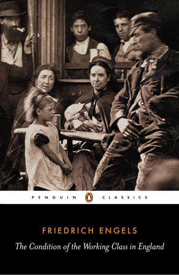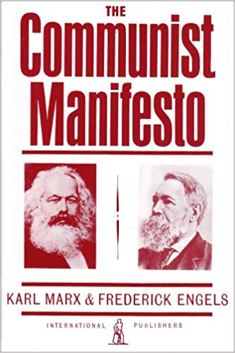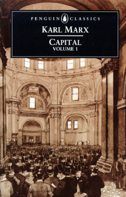
(1844) (1848) (1867, 1885, 1894)
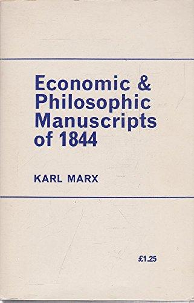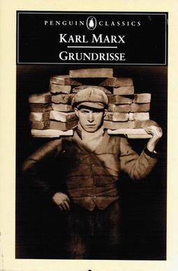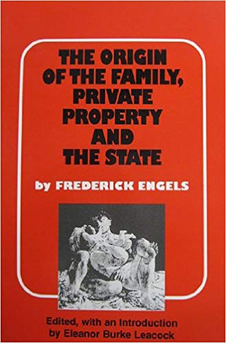
(1844) (1857/8) (1884)
Theses on Feuerbach (1845)
Philosophers have hitherto only interpreted the world in
various ways; the point is to change it.
This has enormous implications for the
relationship of theory to practice. For Marx and subsequent
Marxism theory and praxis have to be a unified thing.
Gramsci referred to Marxism in his prison notebooks as "the
philosophy of praxis".
Marxist Critical Theory
Usually associated with the Frankfurt
School of Social Research, which included members Theodore
Adorno, Marx Horkheimer, Herbert Marcuse, and Jurgen
Habermas.
Frankfurt School distinguished between "scientific theory"
and "critical theory".
Scientific vs. Critical Theory
Scientific Theory:
It's "aim or goal [is] successful manipulation of
the external world."
Objectifying: "one can distinguish clearly between the
theory and the 'objects' to which the theory refers."
Evidence: "require empirical confirmation through
observation and experiment."
Critical Theory:
"Aim at emancipation and enlightenment, at making
agents aware of hidden coercion, thereby freeing them from
that coercion."
Reflective or self-referential: "a critical theory is
always part of the object-domain which it describes;
critical theories are always in part about
themselves.
Evidence: "are cognitively acceptable only if they
survive a more complicated process of evaluation, the
central part of which is that they are 'reflectively
acceptable'." Source: Raymond Geuss, The Idea of a Critical Theory:
Habermas and the Frankfurt School (Cambridge University
Press, 1981), pp. 55-56
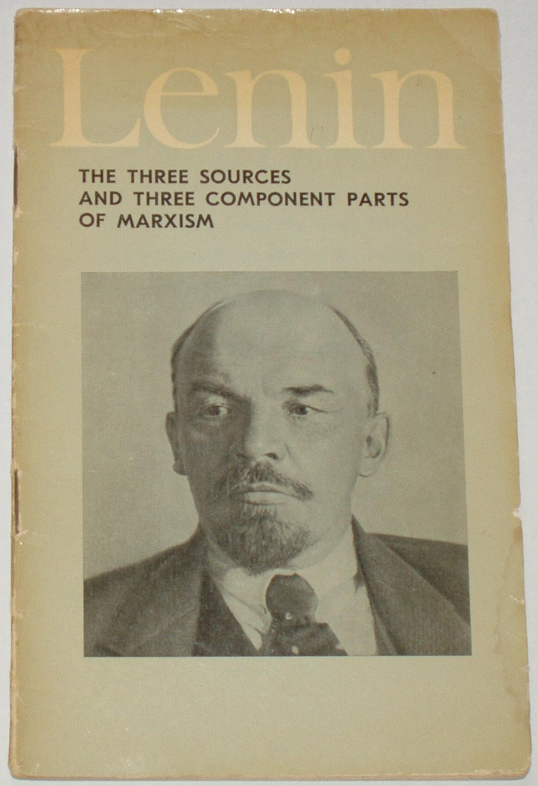(1913)
Three sources: German philosophy, French socialism, English
political economy. A Marxist critical theory should stake
its claims with respect to these three subjects: philosophy,
politics, and political economy.
Librarianship and philosophy
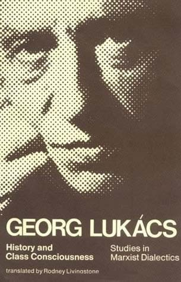
Not just a philosophy or mission for
librarianship, but questioning the fundamental assumptions
of the profession and ourselves. When we talk about
"intellectual freedom", for example, what do we mean by
"freedom"? What is the philosophical history of that idea
within the profession or within society?
But also, questions of ontology: what are the objects that
compose our world? Individuals? Social classes? What do we
mean by "identity"? These kinds of questions are vital and
are often ignored when we concentrate on concrete aspects of
our work, or when we don't critically challenge hegemonic
discourses.
Librarianship and politics
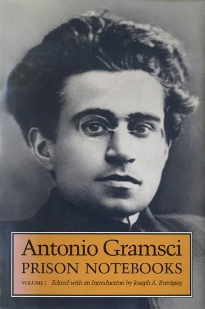
Lenin's famous dictum "who for whom?"
What are the power relations in our profession? What are
the power relations between the profession and the wider
world, our parent institutions, our patrons or users? How
do we reach decisions? Are we collegially or hiearchically
structured? How do we develop our policies and what are
the unintended consequences of our policies? How do we
decide on the language we use (e.g. patrons vs. customers)
and what are the consequences of that? Who do we privilege
or exploit? Who do we include or exclude? Whose voices do
we hear or not hear? How do we relate to politics more
broadly, for example with respect to Indigenous
sovereignty or pipeline expansion? What are the political
presumptions and consequences of free speech or intellectual
freedom? (cf. "first amendment" vs. "charter of rights and
freedoms"). What are the positions of people of colour,
women, queer people, or disabled people in society and in
our libraries, both as workers and users?
Librarianship and political economy
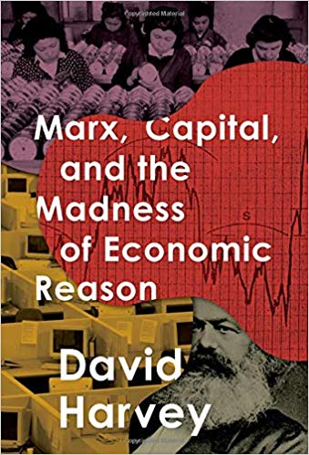
Where does our money come from? How do
we spend it? What kind of an employer are we? What are our
labour practices? What is our relationship with other
economic sectors, like the technology or publishing
sectors? What is the political economy of universities or
of municipalities? What is the underlying political
economy of copyright, and how does that relate to private
propery more broadly?
Conclusion
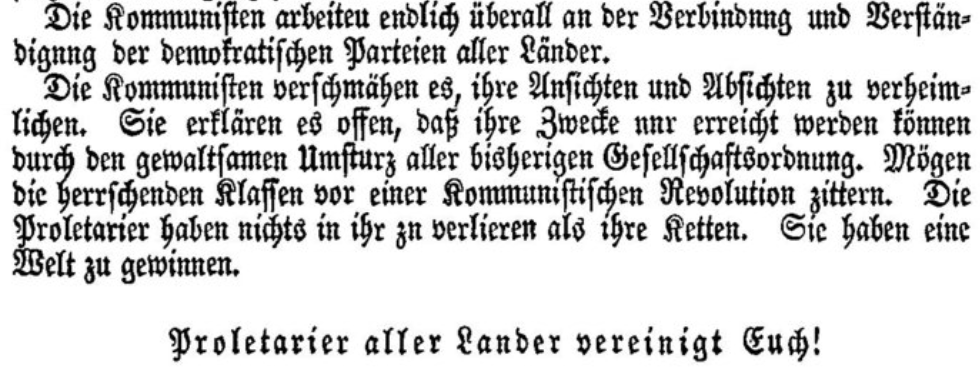
Marxism has, if not answers, at least
suggestions for how to approach these questions and ways
of thinking about them which are logically coherent and
which aim at changing the world. This image is of the
famous closing passage from the Communist Manifesto: "The
proletarians have nothing to lose but their chains. They
have a world to win."